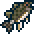

Мирное развлечение — Рыбалка
Террария — это не только непрерывный геноцид монстров и умерщвление боссов, в ней есть мирные аспекты. Одним из таких аспектов является рыбалка. Что такое рыбалка? Рыбалка — это мирный способ получить хорошее снаряжение в начале игры, не бегая по опасным и тёмным шахтам в поисках руды, постоянно умирая в процессе. Ещё в самом начале игры, просматривая список крафтов из дерева на деревянном же верстаке, можно наткнуться на деревянную удочку. Это — первое рыбацкое орудие.
Однако одной только удочки для рыбалки недостаточно, нужна ещё наживка. Наживку можно раздобыть, поймав её сачком, который можно купить у торговца. Основные виды наживки — это червь и светлячок. Светлячки в обилии появляются ночью, если вы постоите на одном месте некоторое время. Черви могут появляться во время дождя или при разбивании различных кучек камней, поросших мхом, которые можно встретить на поверхности повсеместно.
Конечно же, наживки и удочки для рыбалки будет недостаточно. Нужен водоём, в котором можно рыбачить. Чем больше водоём, тем эффективнее будет рыбалка, в слишком маленьких водоёмах рыбалка вообще невозможна. В качестве водоёма для рыбалки рекомендуется океан, помимо стандартного улова там можно выловить: рыбу-меч, которая может стать хорошим начальным оружием; акулу-кирку, которая является мощнейшей киркой дохардмода и рыбу-пилу, которой можно быстро пилить деревья и монстров.
Также в океане можно найти специального НИПа- рыбака. Он будет давать вам задания на поимку той или иной рыбы, а взамен на эту рыбу будет выдавать некоторое вознаграждение. И чем больше заданий будет выполнено, тем лучше будет награда.
Улов варьируется в зависимости от биома, в котором ведётся рыбалка. Например, глубоко в пещерах можно поймать зеркальную рыбу, в то время как на поверхности её просто нет.
Рыбача, можно выловить много полезных вещей — ящики, лягушачью лапку, воздушную рыбу-фугу, рыбу-зефир. Но, эти вещи являются весьма редким уловом. Для того, чтобы заполучить их потребуются усидчивость и упорство.
Открыв ящики, можно получить деньги, зелья, руду, слитки, аксессуары, оружие, питомца, маунта и другие игровые блага. Вообще, рыбалка во многом может заменить походы по пещерам, однако она никогда не сможет сделать этого полностью.
Небольшая хитрость
Постарайтесь порыбачить в океане т.к. там можно выловить Акулу-расхититель (кирка равная по мощности Адской кирке), Акулу-пилу,а также в ящиках: Соколиный меч, Ботинки парусника, Цунами в бутылке, Эглет, а также разнообразные зелья и руды. Однако ящики лучше открыть в хардмоде после разрушения алтарей.
Механика ловли в Terraria
Необходимые условия ловли
- Минимальный размер водоема — 75 блоков (50 для мёда), в случае слишком маленького водоема улова попросту не будет.
- Обязательно наличие наживки в инвентаре.
- Невозможно рыбачить, будучи частично или полностью погруженным в жидкость (даже будучи погруженным в не связный поверхностью водоём), но прицепившись крюком-кошкой под водой — возможно.
- Можно рыбачить на ездовом животном.
- Рыбачить в лаве возможно только с помощью раскалённой удочки.
- Улова не будет при ловле на трюфельного червя в любом биоме кроме океана (ловля в океане призовёт герцога Рыброна).
После соблюдения всех необходимых условий можно приступать к самой рыбалке. Для начала нужно закинуть удочку в водоём и дождаться движения поплавка (движение поплавка будет сопровождено характерным звуком), а после начала движения — сразу вытягивать удочку (ЛКМ). Но леска может порваться и улов сорвётся (это можно предотвратить, надев аксессуар высококачественная рыболовная леска высококачественная рыболовная леска). Иногда наживка тратится независимо от того, выловилась рыба или нет.
Шанс поимки рыбы зависи от:
- Мощности наживки
- Мощности удочки
- Размера водоёма
- Времени суток
- Фазы луны
- Наличие дождя
Шанс поимки квестовой рыбы зависит от:
-
Времени, прошедшего с момента взятия квеста:
- После взятого квеста у рыбака шанс поимки необходимой рыбы значительно возрастает, но повышенный шанс улова действует только на протяжении этого дня (квестовый день начинается и заканчивается в 4:30 и длится 24 игровых часа). Например, если квест взят в 19:00, то поймать необходимую рыбу с повышенным шансом возможно на протяжении 9,5 часов, до 4:30 следующего дня.
- По истечении квестового дня шанс улова необходимой рыбы значительно падает (всё равно что случайным образом выловить квестовую рыбу).
-
Выполнения всех необходимых условий для поимки:
- Необходимо находиться в правильном биоме, на нужной высоте, глубине и, возможно, соблюсти некоторые дополнительные условия (всё это описано, как правило, в тексте самого квеста; более подробную информацию для руководства можно найти в таблице улова).
Примечание
При несоблюдении всех необходимых условий поймать требуемую рыбу для активного квеста невозможно.
Факторы, влияющие на ловлю рыбы
В рыбалке есть ряд факторов, от которых зависит редкость улова. Все они объединены в один, в «навык рыбной ловли», который определяет шанс на получение более ценного улова. Чуть ниже вы увидите таблицу в которой указаны предметы, влияющие на навык рыбной ловли.
| Предмет | Эффект | Как создать/добыть | |
|---|---|---|---|
 |
Набор рыбака | +10 % к рыболовной силе | Создаётся из 3-х аксессуаров |
 |
Рыбацкая серьга | +10 к рыболовной силе | В качестве награды за задание рыбака. |
 |
Одежда рыбака | +5 к рыболовной силе (за каждую часть) | После выполнения 10-ого, 15-ого и 20-ого задания рыбака. |
| Зелье рыбалки | +15 к рыболовной силе (8мин) | Бутылка с водой + Воднолист + Хрустящий мед |
| Размер | Эффект |
|---|---|
| 75 | -75% |
| 100 | -66.6% |
| 125 | -58.3% |
| 150 | -50% |
| 175 | -41.6% |
| 200 | -33.3% |
| 225 | -25% |
| 250 | -16.6% |
| 275 | -8.3% |
| 300 + | 0.00% |
| Предмет | Эффект | Как создать/добыть | |
|---|---|---|---|
 |
Высокопрочная леска | Лесска никогда не оборвётся | В качестве награды за задание рыбака |
 |
Ящик для снастей | -5 % шанса потратить наживку. | В качестве награды за задание рыбака |
| Зелье ящика | +10 % к шансу выловить ящик (3мин) | Бутылка с водой + Янтарь + Смертеросль + Луносвет | |
| Зелье сонара | Показывает зацепившийся предмет (4 мин.) | Бутылка с водой + Воднолист + Коралл | |
 |
Карманный справочник рыбака | Отображает текущую рыболовную силу | В качестве награды за задание рыбака |
| Фактор | Эффект |
|---|---|
| Любая облачность | +10% |
| Дождь | +20% |
| 4:30am — 6:00am | +30% |
| 9:00am — 3:00pm | -20% |
| 6:00pm — 7:00pm | +30% |
| 9:00pm — 3:00am | -20% |
| Полнолуние | +10% |
| Фаза луны 2 или 8 | +5% |
| Фаза луны 4 или 6 | -5% |
| Новолуние (нет луны) | -10% |

Размером водоёма является суммарное количество блоков воды в определённых участках: расчёт ведётся сверху вниз от поверхности воды (если вертикальная полоса не доходит до поверхности — она не засчитывается). На картинке зелёным указаны подходящие части водоёма, а фиолетовым — часть, которая не учитывается игрой.
Примечание
Если какую-то определённую рыбу просит поймать рыбак, то шанс её поимки очень сильно возрастает по сравнению с другими квестовыми рыбами.
Наживка
У наживки, как и у кирки, молота и топора есть сила. Чем сильнее наживка, тем дороже рыба и ящики, и тем меньше вероятность выпадения мусора. Также, чем выше сила наживки, тем выше шанс, что она не будет использована, и вероятность этого не зависит от того, сорвалась добыча или нет. Сила наживки суммируется с другими факторами, влияющими на уровень навыка рыбалки.
|
|
|


Улов
Вы можете выловить различные виды рыб, от самых маленьких до редких, на поимку которых даёт задание рыбак. Почти из всех видов рыб можно сделать еду, дающую бафф Сытость, а некоторые рыбы являются ингредиентами, оружием или инструментом.
Также можно выловить ящики — деревянный, железный и золотой. Например, деревянный содержит якорь, действующий как гарпун, и слитки дохардмодного и хармодного режима. Железный ящик может содержать титановые слитки, аксессуары и приманку для питомца.
Иногда вы можете поймать мусор, такой как жестяная банка, водоросли или старый башмак. Мусор абсолютно бесполезен.
Водоём
В ловле рыбы играет роль водоём, в который вы закидываете крючок. В воде каждого биома можно выудить уникальную рыбу.
Водоёмы делятся на типы, высоту над уровнем моря и биом:
-
Типы:
- Вода — основной тип водоёмов, в воде вылавливаются почти все виды рыб.
- Мёд — такие водоёмы можно встретить лишь в ульях.
- Лава — в лаве можно рыбачить только раскалённой удочкой.
-
Высота:
- Космос — озёра на парящих островах, можно создать искусственно.
- Поверхность — обычные водоёмы и озёра на земле, также океан.
- Подземелье — земляной слой.
- Пещеры — каменный слой.
- Ад — лавовые озёра.
-
Биом:
- Океан
- Джунгли
- Снежный биом
- Святые земли
- Искажение
- Кримзон
- Грибной биом
Улов
Во время рыбалки вы можете выловить одну из перечисленных рыб представленных ниже в таблице. Улов будет зависеть от высоты (зоны), на которой проводится рыбалка и от биома.
Также, улов условно можно разделить на различные подкатегории:
- Простая рыба — является ингредиентом для создания приготовленной рыбы, но некоторые имеют и другое назначение.
- Квестовая рыба — Квестовая рыба служит лишь для выполнения заданий, которые даёт рыбак. Учтите, что шанс вылова квестовой рыбы, задание выловить которую дал вам рыбак, значительно возрастает. После вылавливания квестовой рыбы, шанс поймать вторую такую же резко падает. Однако если складировать квестовую рыбу в свинью-копилку (проверено на версии 1.3.5 и Денежном Корыте ), шанс снова выловить квестовую рыбу будет все так же высок. (возможно, баг). Может помочь в получении достижений, связанных с рыбалкой
- Прочее
| Img | Рус/Анг | ID | Зона | Биом | Примечание | Цена |
|---|---|---|---|---|---|---|
| Атлантическая треска/ Atlantic Cod | 2299 | Любая | Снежный биом | Ингредиент для приготовленной рыбы | 7с 50м | |
|  | Окунь/ Bass | 2290 | Любая | Любой, кроме океана | Ингредиент для приготовленной рыбы | 5с |
| Неон тетра/ Neon Tetra | 2302 | Любая | Джунгли | Материалом не является и используется только для продажи | 15с | |
| Красный луциан/ Red Snapper | 2301 | Космос, поверхность | Океан | Ингредиент для приготовленной рыбы и сашими | 7с 50м | |
| Лосось/ Salmon | 2298 | Космос, поверхность | Лесной, нужно минимум 1000 блоков воды в водоёме | Ингредиент для приготовленной рыбы и сашими | 7с 50м | |
| Креветка/ Shrimp | 2316 | Космос, поверхность | Океан | Ингредиент для приготовленных креветок | 15с | |
| Форель/ Trout | 2297 | Космос, поверхность | Океан | Ингредиент для приготовленной рыбы | 5с | |
| Тунец/ Tuna | 2300 | Космос, поверхность | Океан | Ингредиент для приготовленной рыбы и сашими | 7с 50м | |
| Розовая медуза/ Pink Jellyfish | 2438 | Космос, поверхность | Океан | Наживка, ингредиент для Аквариума с медузой | ||
| Синяя медуза/ Blue Jellyfish | 2436 | Пещеры, ад | Любой | Наживка, ингредиент для Аквариума с медузой | ||
| Зелёная медуза/ Green Jellyfish | 2437 | Пещеры, ад | Любой | Наживка, ингредиент для Аквариума с медузой; В хардмоде | ||
| Золотой карп/ Golden Carp | 2308 | Подземелье, пещеры, ад | Любой | Материалом не является и используется только для продажи | 10з | |
| Медовый плавник/ Honeyfin | 2314 | Любая | Пчелиный Улей | Еда (восстанавливает 120 HP); можно поймать только в меду | 15c | |
| Рыба хаоса/ Chaos Fish | 2317 | Подземелье, пещеры, ад | Святые земли | Ингредиент для зелья телепортации | 3з | |
| Зеркальная рыба/ Specular Fish | 2309 | Подземелье, пещеры, ад | Лесной | Ингредиент для зелья возврата и зелья червоточины | 7с 50м | |
| Морозный пескарь/ Frost Minnow | 2306 | Любая | Снежный биом | Ингредиент для согревающего зелья | 15с | |
| Бронированная рыба/ Armored Cavefish | 2303 | Подземелье, пещеры, ад | Любой | Ингредиент для зелья выносливости | 15с | |
| Хризиптера/ Damselfish | 2304 | Космос | Лесной | Ингредиент для зелья спокойствия | 30с | |
| Пёстрая сальная рыба/ Variegated Lardfish | 2311 | Подземелье, пещеры, ад | Джунгли | Ингредиент для призывающего зелья | 15с | |
| Двойная треска/ Double Cod | 2313 | Космос, поверхность | Джунгли | Ингредиент для зелья экономии боезапаса | 15с | |
| Багряная тигровая рыба/ Crimson Tigerfish | 2305 | Любая | Кримзон | Ингредиент для зелья сердец | 7с 50м | |
 |
Эбонитовая кои/ Ebonkoi | 2318 | Любая | Искажение | Ингредиент для зелья гнева | 15с |
| Кровавая пиранья/ Hemopiranha | 2319 | Любая | Кримзон | Ингредиент для зелья ярости | 15с | |
| Рыба-принцесса/ Princess Fish | 2307 | Любая | Святые земли | Ингредиент для любовного зелья | 25с | |
| Призматическая рыба/ Prismite | 2310 | Любая | Святые земли | Ингредиент для зелья жизненной силы | 1з | |
| Смердящая рыба/ Stinkfish | 2321 | Подземелье, пещеры, ад | Любой | Ингредиент для вонючего зелья | 25с | |
| Обсидиановая рыба/ Obsidifish | 2315 | Любая | Любой | Требуется раскалённая удочка, ингредиент для зелья инферно | 15с | |
| Пылающая кои/ Flarefin Koi | 2312 | Любая | Любой | Требуется раскалённая удочка, ингредиент для зелья инферно | 50с |
| Img | Рус/Анг | ID | Зона | Биом | Примечание |
|---|---|---|---|---|---|
| Грибная рыба/ Amanitia Fungifin | 2475 | Любая | Грибной биом | ||
| Морской ангел/ Angelfish | 2476 | Космос | Лесной | Можно поймать только на парящем озере | |
| Рыба-мышь/ Batfish | 2450 | Подземелье, пещеры, ад | Лесной | ||
| Кровавый мановар/ Bloody Manowar | 2477 | Любая | Кримзон | ||
| Костяная рыба/ Bonefish | 2478 | Подземелье, пещеры, ад | Лесной | ||
| Шмелиный тунец/ Bumblebee Tuna | 2451 | Любая | Любой | Можно поймать только в меду | |
| Рыба-кролик/ Bunnyfish | 2479 | Поверхность | Лесной | ||
 |
Капитан Тунцовая Борода/ Cap'n Tunabeard | 2480 | Космос, поверхность | Океан | Хардмод |
| Рыба-кот/ Catfish | 2452 | Поверхность | Джунгли | ||
| Рыба-облако/ Cloudfish | 2453 | Космос | Лесной | Можно поймать только на парящем озере | |
| Рыба-клоун/ Clownfish | 2481 | Космос, поверхность | Океан | ||
| Проклятая рыба/ Cursedfish | 2454 | Любая | Искажение | Хардмод | |
| Демоническая рыба/ Demonic Hellfish | 2482 | Пещеры, ад | Лесной | ||
| Чёртова рыба/ Derpfish | 2483 | Поверхность | Джунгли | Хардмод | |
| Земляная рыба/ Dirtfish | 2455 | Поверхность, подземелье | Лесной | ||
| Рыба-динамит/ Dynamite Fish | 2456 | Поверхность | Лесной | ||
| Пожиратель планктона/ Eater of Plankton | 2457 | Любая | Искажение | ||
| Звёздная рыба/ Fallen Starfish | 2458 | Космос, поверхность | Лесной | ||
| Рыботрон/ Fishotron | 2460 | Пещеры, Ад | Лесной | ||
| Рыброн/ Fishron | 2484 | Подземелье | Снежный биом | Хардмод | |
| Рыба вуду гида/ Guide Voodoo Fish | 2472 | Пещеры, ад | Лесной | ||
| Рыба-гарпия/ Harpyfish | 2461 | Космос, Поверхность | Лесной | ||
| Жаждущая рыба/ Hungerfish | 2462 | Пещеры, ад | Лесной | Хардмод | |
| Ихоровая рыба/ Ichorfish | 2463 | Любая | Кримзон | Хардмод | |
| Заражённая рыба-ножны/ Infected Scabbardfish | 2485 | Поверхность | Искажение | ||
| Драгоценная рыба/ Jewelfish | 2464 | Подземелье, пещеры, ад | Лесной | ||
| Рыба-мираж/ Mirage Fish | 2465 | Подземелье, пещеры, ад | Святые земли | ||
| Грязевая рыба/ Mudfish | 2486 | Любая | Джунгли | ||
| Рыба-Флинкс мутант/ Mutant Flinxfin | 2466 | Подземелье, пещеры, ад | Снежный биом | ||
| Рыба-пингвин/ Pengfish | 2467 | Космос, поверхность | Снежный биом | ||
| Рыба-фея/ Pixiefish | 2468 | Космос, поверхность | Святые земли | Хардмод | |
| Рыба-слизень/ Slimefish | 2487 | Космос, поверхность | Лесной | ||
| Рыба-паук/ Spiderfish | 2469 | Подземелье, пещеры, ад | Лесной | ||
| Рыба Ктулху/ The Fish of Cthulhu | 2459 | Космос, поверхность | Лесной | ||
| Тропическая барракуда/ Tropical Barracuda | 2488 | Поверхность | Джунгли | ||
| Тундровая форель/ Tundra Trout | 2470 | Поверхность | Снежный биом | ||
| Рыба-единорог/ Unicorn Fish | 2471 | Любая | Святые земли | ||
| Хвост виверны/ Wyverntail | 2473 | Космос | Любой | Хардмод | |
 |
Рыба-зомби/ Zombie Fish | 2474 | Поверхность | Лесной |


Примечание
- Зона определяет высоту или глубину, на которой нужно ловить рыбу, легко определяется с помощью глубиномера, имеются следующие значения:
- Космос (Sky) — зона космоса, легко определяется сменой музыки;
- Поверхность (Surface) — наземный уровень, ниже космоса, и выше подземных уровней, легко определяется по растущей траве на блоках земли;
- Подземелье (Underground) — первый подземный уровень, расположен ниже поверхностного (земного), легко определяется по отсутствию травы на блоках земли и смене заднего фона, выполненного в виде скалистых камней (темнее на миникарте);
- Пещеры (Cavern) — второй подземный уровень, располагается примерно в середине карты, легко отличается по заднему фону, который темнее обычного каменного слоя (в том числе и на миникарте);
- Ад (Underworld) — самая нижняя зона, включающая в себя непосредственно ад, а также лавовый слой, который хорошо видно по заднему фону, имеющему текстуру лавовых пещер.
- Биом "Лесной", означает наличие неизменённого биома, т.е. в подземельях — это обычное подземелье, не изменённое искажением/кримзоном или святыми землями.
- Для отсутствия штрафа ловли водоём должен иметь 300+ блоков воды или более, для мёда достаточно 75+ блоков, океаном считается водоём, расположенный у края карты (видно по изменению заднего фона) и имеющий 1000+ блоков воды, таким образом океаном может считаться искусственный водоём большого размера.
- Рыбак выдаёт квесты в зависимости от исследованных биомов, например если игрок ещё не посещал уровень космоса — он не будет выдавать квесты на рыбу, которая ловится только в космосе.